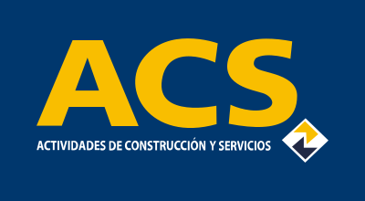

Rankings Construction & materials ACS

ACS
A view of the same findings, not a new score. How it works
In plain words
The model gives 87 out of 100. Pulling it down: profit is only about 2% of revenue, the share is pricey versus its history, and a fifth of the order book is data centres, so the share fell on fears of lower AI investment. Pulling it up: the outlook was raised and the order book is a record. Watch the €16.3bn gross debt and May's new shares.
In the 70+ zone: a score above 70 with more than 20% upside to the median analyst target.
Biggest deductions
- Multiples vs own history and peers−7
- Margin−5
- Concentration in AI data centres−5
Strengths
- Raised guidance+2
- Record order book+2
- Insider buying+1
How the score is built
From 100 to 90, step by step: points off for the business, the price and the cracks, back for documented strengths, then three data adjustments.
Hover or select a step to see what drove it. Steps with findings open them below.
Key numbers
As of 20 Nov 2026. Analyst targets tend to be optimistic; read upside as a hint, not a forecast.
- Price
- 82.80 EUR
- Median analyst target
- 130.00 EUR
- Upside to median
- +57.0%
- Analysts
- 17
- Target range
- 99.75 – 153.10 EUR
- 52-week change
- +8%
- P/E (trailing)
- 19.9
- Forward P/E
- 18.0
- PEG
- 0.97
Findings
Every deduction and every plus, with its source. Open a step to read them.
Business
Is the company getting stronger, not just bigger? · 4 findings−9 of −30
- −5MarginOperating margin 3.24% and net margin 1.99% TTM on €54.4bn in revenue (3.3% and 1.95% at the previous analysis). The company's EBIT margin in 9M 2026 is 4.4% (€1,807m on €41,262m) vs approx. 4.1% a year earlier, and Turner's PBT margin rose to 4.0%, but the net margin is still in the 1.9–2.2% band, where it has been every year since 2022.
- −2Capital allocationAfter many years of buybacks, ACS raised €1,703m in an accelerated placement in May 2026 at €125 (new shares and unwinding of equity swaps); the share count is up 1.63% in a year, and the price of €91.05 is 27% below the issue price. Over the last 12 months investments (€2.7bn) and shareholder returns (€0.89bn) have exceeded operating cash flow (NOCF €2.39bn), so the issue funds part of the plan.
- −1ROICROIC of 15.9% (15.5% at the previous analysis) is lifted by negative working capital; ROCE has risen to 8.2% from 7.3% in 2025, but was only 4.4–4.5% in 2023–24 and is close to a WACC of 6.2%.
- −1Quality of growthOrganic growth has accelerated (revenue +14% currency-adjusted in 9M, Turner +23.8%), but part of the growth in earnings to shareholders is bought: in 9M 2026 ACS spent €727m on the rest of Thiess and €524m on more Hochtief shares (now 79.35%), and Dragados bought Voltan in November, after cash acquisitions of €1.0–1.5bn a year in 2023–25.
Price
Today's multiples against the company's own history and its peers. · 1 finding−7 of −35
- −7Multiples vs own history and peersForward P/E 19.0 (20.2 at the previous analysis) vs 10.8–22.8 in 2021–25 (upper part), and P/B 4.3 is now above the 0.9–4.2 range, while EV/EBITDA 9.0 is lower than 10.4–15.3. On the company's own forecast for ordinary net profit in 2026 (about €1.16bn) the P/E is about 21. Vinci trades at forward P/E 11.9 and EV/EBITDA 6.7. FCF yield 10.2% TTM, but only about 5.5% on analysts' FCF for 2026 (€1.32bn).
Cracks
Cash flow, customers, debt, insiders, guidance and what sits behind the headline numbers. · 2 findings−6 of −35
- −5Concentration in AI data centresThe data centre order book has grown 94% to approx. €26bn (approx. 23% of the group's €111bn; 22% at H1), Turner's data centre order book is up 84%, and ACS expects €17–18bn in data centre revenue in 2026, approx. 31% of the group's approx. €56bn; the 2030 plan is based on €27–30bn. Management cites tougher competition for large projects and a risk of permitting delays. The stock (€91.05) is 35% below the May peak of €141.20.
- −1Debt and interestGross debt €14.4bn (€16.3bn at the previous analysis) and interest paid approx. €0.9bn a year; interest cover only 2.3x and debt/equity 2.4 (2.6). The company's net cash of €1.0bn at June has turned into net debt of €908m at September despite the capital raise, and the balance sheet still rests on customer prepayments.
Plus
Only documented strengths. · 3 findings+5 of +15
- +2Raised guidanceOrdinary net profit rose 35% in 9M 2026 (reported €789m, +20.5%), at the top of the 30–35% forecast raised at H1. At the capital markets day on 12 Nov, ACS expects about €1.16bn for 2026 (the 2024 target was €0.85–1.0bn) and set 2030 targets of €2.2–2.4bn in ordinary net profit (18–20% a year) and a dividend of up to €4.9 per share. The 2026 forecast has not been raised further.
- +1Insider buyingChairman Florentino Pérez (via Rosán Inversiones) bought about 1.2m new shares at €125 in the May share issue and has bought more since; in August 2026 his stake passed 15.015% (from 14.896%), 41.61m shares. CriteriaCaixa increased to 10.65% in May.
- +2Record order bookThe order book reached a record €111.0bn at Sept 2026 (+24%, +27% comparable; €105.9bn at H1), more than two years of revenue. New orders rose 28.2% to €56.2bn with a book-to-bill of 1.4x, and outside data centres the order book in energy, water, industry and critical minerals grew 67.5%.
Caveats
What the score does not capture, or where the data is weak.
Also in Construction & materials
The highest scores in the same industry.